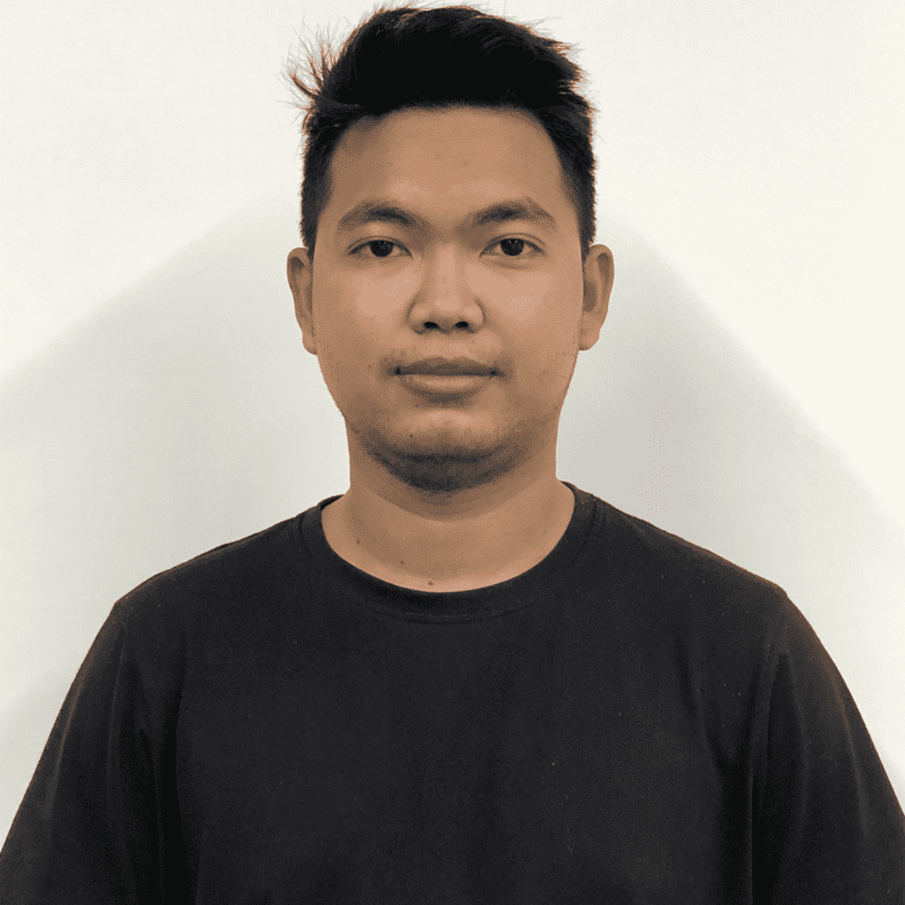

|  | Name: Kong SothunAddress: Phnom Penh, Cambodia Position: Senior Civil Engineer Email: Kong.sothun@gmail.com Tel: +855962766693 |
I have studied some short course as part of speech Microsoft Word, Microsoft Excel Advance, Self-Development, Youth and Young Leader and nowadays
I am finish Bachelor of Civil Engineering at Norton University. Mention good and having successfully on subject through my experience, knowledge, and effective communication,
I am confident that I can be a valuable asset to your company. In addition, based on my powerful inter-personal skills and self-esteem, I firmly hope that I will be able to achieve all the hard work.
I am available for an interview any time convenient to you and look forward to hearing from you.
And I hope you call to me and interview me when you have free time. Furthermore, I believe on you.
I have enclosed my curriculum vitae and copies of reference for your favorable consideration.
Thank for Dear director so much that you look my CV. Thank for your consideration
| My Infomation |
| Nationalty : | Khmer |
| Sex : | Male |
| Age : | 28 |
| Place of Birth : | Phnom Penh, Cambodia |
| 2011-2016 : | Student at Norton University and Major in Civil Engineering |
| 2005-2011 : | Student at Phsar Dem Thkov High School in General Education |
| 1999-2005 : | Student at Toul Tom Poug Primary school in General Education |
| 2019-Present : | Senior Civil Engineer and Project Manager at Greystone Investment Co,.Ltd.(RC Structure, Steel structure, Inspection Work) |
| 2017-2019 : | Site Supervisor at Raybuildinggroup Co., Ltd(RC,Steel,MEP,Decoration) |
| 2016-2017 : | Site Supervisor at UIN Construction Co,. Ltd(Decoration work, Inspection work) |
| 2015-2016 : | Site Engineer at L Residenc Construction(Project Condo)
Site Engineer at VNB Bore Pile(Foundation) |
| 2013-2014 : | Site Engineer at Borey Pich(Shop house construction) |
| 2011-2013 : | Teach Education to people who need to learn
Have join techical training of civil engineer work(RC,PC,BP Foundation, DV Foundation) |
| Keys Skill : | : Presentation Skill, Leadership Skill, Interpersonal Skill
: Ability at work as team and indivadual : Good communication and negotiation skill : A capital to be flexsible under defficult condition : ability to draw the plan by hand is good : Ability to calculate the foundation, column, beam, and slab of the building |
| Khmer : | Mother tonge |
| English : | Speaking, Listening, Writting (Good) |
| Skill : | - Microsoft office ( Good )
- Can use Email and Internet - AutoCAD, Robot Analysis, Microsoft Project, SketchUP ( Good ) - Foundation Design Plaxis 3D ( Good ) |